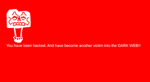

Project Type
Topdown action roguelike shooter
Project Entry
A topdown wave-based roguelike shooter built around escalating encounters and three boss fights.

Protect Your Data is structured here more like a running development log than a static portfolio card. The point is to show what the project is trying to solve, what is already working, and where iteration would continue.
The game leans on a clean topdown combat read, repeated wave pressure, and major boss checkpoints to give each run a stronger sense of progression.
The interesting part of the project is not just the enemy count, but the pacing between swarms, recovery, and boss escalation. The devlog framing makes that easier to explain than a one-line project summary.
A next pass here would be documenting player upgrades, difficulty tuning, and the decisions behind each boss.
